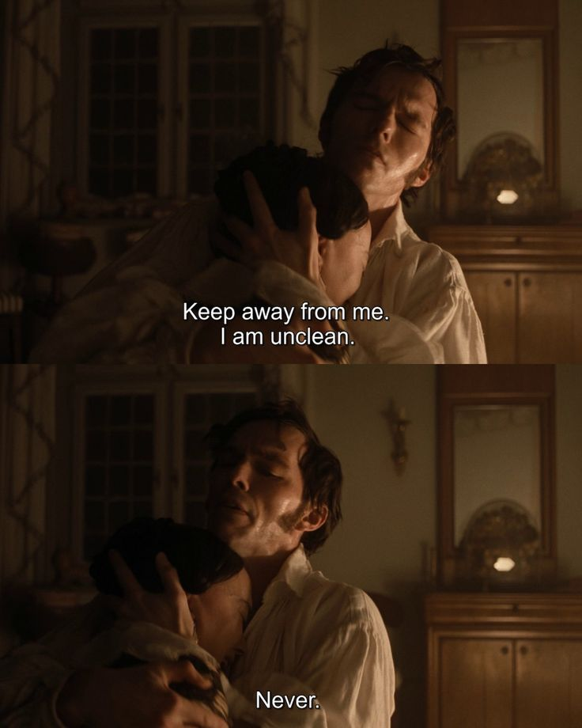

Intimacy
Intimacy is the closeness shared between two individuals who love each other romantically. It’s not just physical—through kisses and embraces—but also intellectual. It’s found in the playful banter, shared inside jokes, or even in the subtle gestures, like noticing something that might interest the other or brushing hands as you walk past. Intimacy is that quiet connection, the unspoken bond that wraps around you both.
Intimacy in Music
Out On a Limb by Teena Marie
Choose an Experience
Yearning
Connection
Artwork
Skinonskinonskin (1999) by Entropy8Zuper! (Auriea Harvey and Michaël Samyn)
A series of digital love letters sent between artists Auriea Harvey and Michaël Samyn who showcase their closeness through interactive web pages, text, and audio. It shows how complex and unique their relationship is.
Much Better Than This (2006) by Rafaël Rozendaal
An interactive webpage that displays two side profiles kissing, with no distinct facial features—only silhouettes. As their lips meet, the faces shift in color, each profile adopting a unique hue, highlighting the intimacy of the moment.
Relaxed Love Mind Map (2024) by lovewebsite
An engaging webpage presenting phrases from the artist’s journal that include the word “love.” Users can rearrange these phrases, discovering how they all link back to the central theme of love, creating a visual representation of its interconnectedness.
Intimate Moments

Isabel & Tom: The Fountain (2006)

Ellen & Thomas: Nosferatu (2024)

Anastasia & Dimitri: Anastasia (1997)